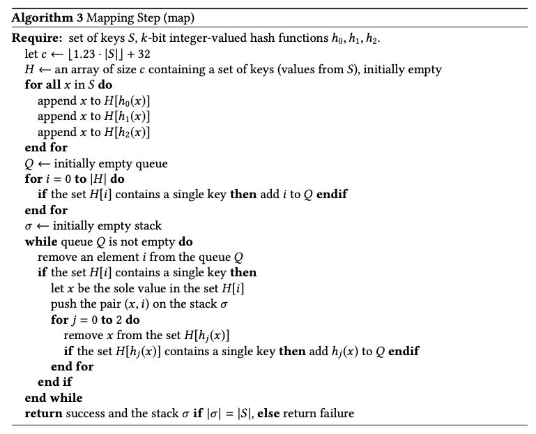
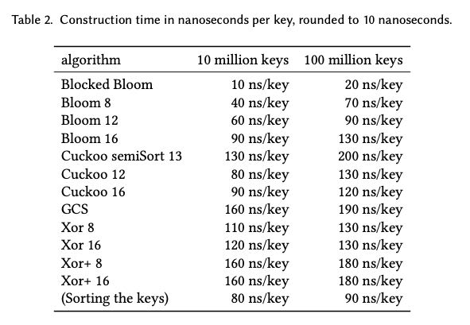
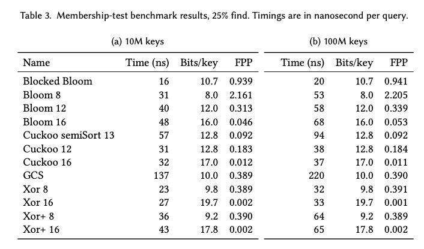

Xor Filters: Faster and Smaller Than Bloom and Cuckoo
这名字也挺有意思的，之前Cuckoo filter文章名称叫做“Cuckoo Filter: Practically Better Than Bloom”. 这论文比较符合我的口味，至少我能看个7788，数学部分不多，也写了不少实现细节。
和Cuckoo filter不同的是，这个xor filter是针对静态数据构建的，不能动态地进行修改，实现起来有点类似于针对静态的一堆strings设计出perfect hashing function. xor filter做出来有两个东西：3个hash functions, 以及fingerprints数组B，要求是 fp(x) = B[h0(x)] xor B[h1(x)] xor B[h2(x)]. 怎么找到这3个hash functions并构建出B是主要的问题。另外需要注意的是，h0,h1,h2映射的位置是B三个独立区间。
假设我们找到3个hash functions之后，那么我们可以：
- set B[h0(x)] = 0
- 确保之后 B[h1(x)] 和 B[h2(x)] 不改变
- set B[h0(x)] = fp(x) xor B[h1(x)] xor B[h2(x)]
论文就是这么做的，问题就在于如何找到一个顺序来设置B，可以确保条件2成立。
寻找这个顺序是个概率算法，但是通常1-2次都是可以找到的，取决于B的大小以及hash functions的随机性。整个思路其实非常类似寻找一个拓扑排序。找到了这个拓扑排序，就可以按照逆序进行构建，具体算法可以看论文里面。

验证是否存在时我们需要计算3次hash functions和3次memory accesses. 但是作者认为这不会造成什么问题，因为3次访存是相互独立的，可以并行地完成(Though other related data structures may need fewer memory accesses, most modern processors can issue more than three memory accesses concurrently thanks to memory- level parallelism)
在此算法的基础上我们可以做空间压缩：
- 如果sizeof(entry) = 8(fingerprint大小)的话，我们可以发送一个bit array标记空entry
- 另外如果我们尽量将h0(x)放在前面两个block, 那么最后一个block大部分都是empty entry, 这样可以节省更多空间。
作者计算了一下可以从1.23k bit per entry下降到1.0824k + 0,5125 bit per entry.
在计算 x% m 的时候作者有个优化值得说下，假设sizeof(x) = 4的话，那么可以 (x * m) >> 32. 因为 x / (2 ^ 32) 可以认为就是均匀打散的。另外就是有个murmur finalizer可以打散64bit value
input: key x, seed s h ← x+s h ← (h xor (h >> 33)) ∗ 0xff51afd7ed558ccd h ← (h xor (h >> 33)) ∗ 0xc4ceb9fe1a85ec53 return h xor (h >> 33)
最后如果是关注性能而不是空间的话，看起来blocked bloom还是最好的。

